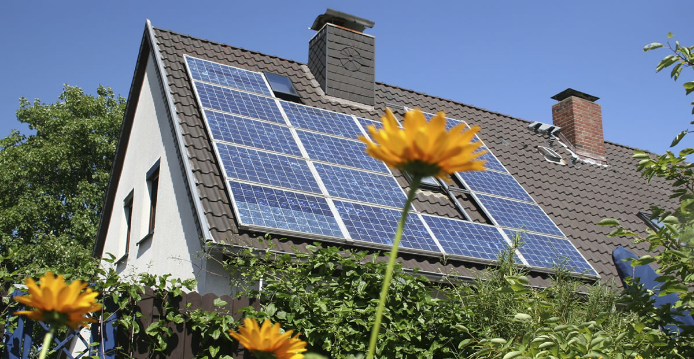

Solar energy is breaking records around the world, as technology costs drop, new solar jobs are created every day, and consumers are finding easier and less expensive ways to tap into solar. Your support can help solar energy—and the solar community—to grow. Ever wonder how you could be a part of this expanding opportunity? Check out these 4 ideas for how you can be a part of this movement and support solar in your community!
Visit solar demonstrations and events!
Will you be in Denver in October 2017? You can visit the U.S. Department of Energy Solar Decathlon! This life-changing competition challenges teams of collegiate students to design and build full-size, solar-powered houses. The event highlights today’s most exciting and innovative clean energy technologies while building the next generation of American clean energy innovators.
- The Solar Decathlon invites visitors to tour the team’s solar-powered houses to learn how easy it is and how good it feels to save energy, water, and money by making smart, sustainable choices. Solar Decathlon 2017 also features a sustainability expo and professional, consumer, and middle school education events. Plan your visit.
- Can’t visit the event in person? Show your support: donate to support Solar Decathlon 2017.
Incorporate solar into your home—see what’s possible!

Become a leader in the solar community!
Make your voice heard!
- Sign Environment America’s call to “go big on solar”.
- Join the Solar Energy Industries Association’s Solar Power Advocacy Network. Add your voice to thousands of other solar advocates, reaching policymakers and influencers around the country.
- Join Vote Solar, a non-profit organization that is working to bring solar energy into the mainstream. It is free to join, and they will alert you when there is something important happening in your state.
- Learn who your state representatives are, and let them know that you support solar energy. Find your state legislator on the Open States website.
- Contact your Congressional representatives and let them know solar research, training, jobs, and technology deployment matter. Find your members of Congress on the GovTrack website.
We’ll share new blog posts—soon—describing ways to support solar by volunteering your time and talents, and ways to participate in solar educational activities that can help build the next generation of solar innovators.
What’s your favorite way to support solar energy and the solar community?
Tell us on social media! #supportsolar #solarfuture #greenenergy
Like us on Facebook
Connect with us on LinkedIn
Find us on Instagram